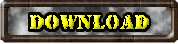
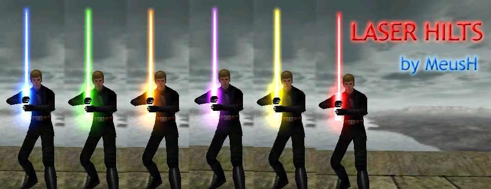
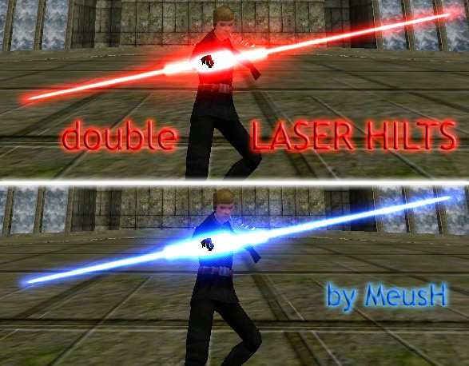

Laser hilts


Laser hilts
This is a new saber hilt.
The most funny thing is that there is 0 polys!
Hilt is a blade (or blade is a hilt)
BTW, it is my first model, and I hope you like it
Notice, that "single" saber has two blades, so you can twice a damage!
In this mod are included two versions: Single laser hilt and Dual laser hilt.

